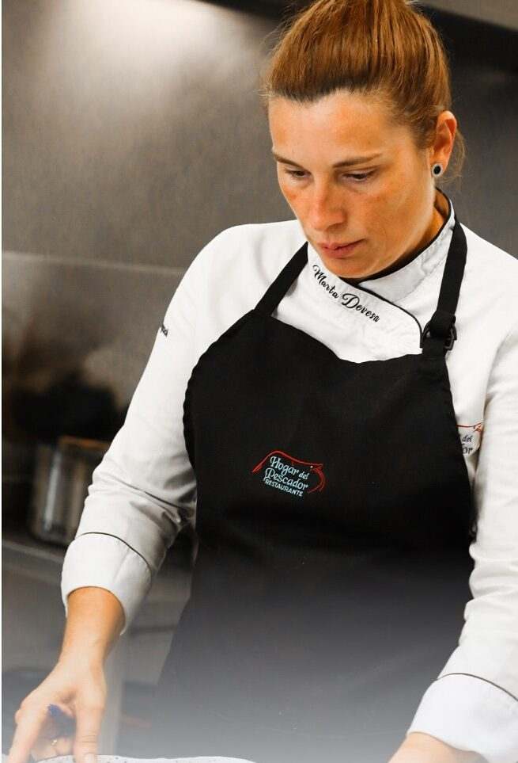
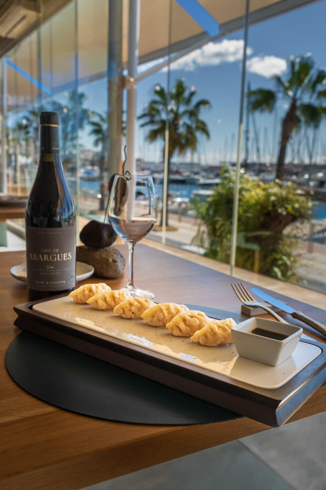
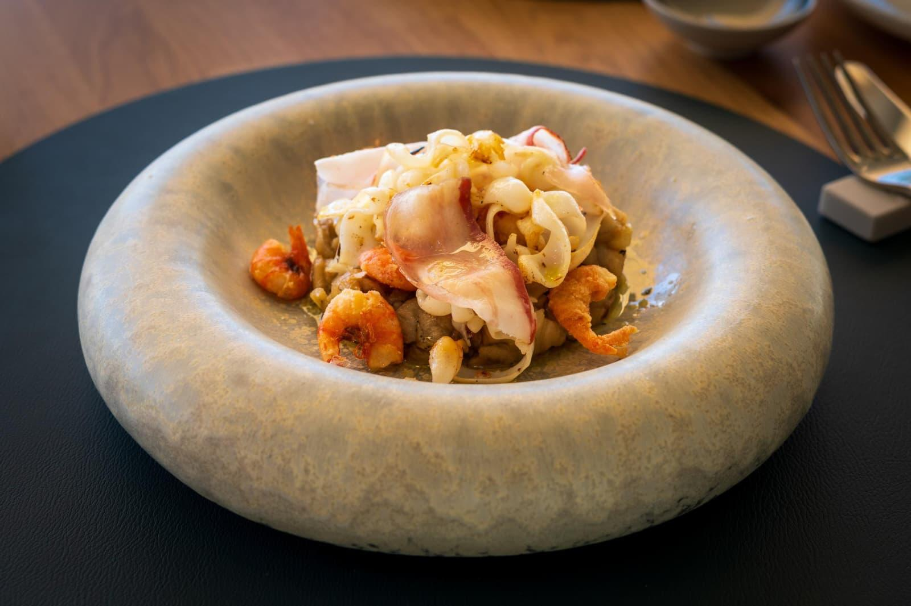
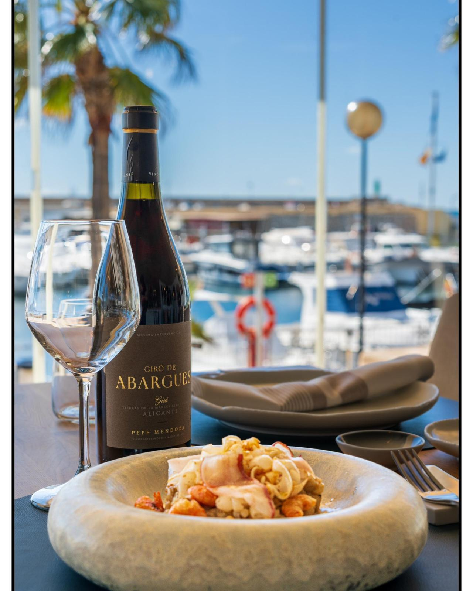
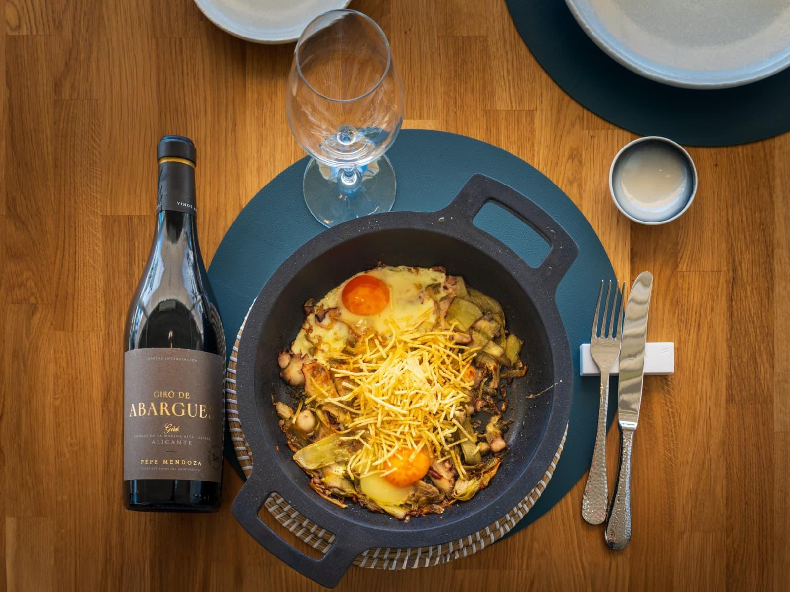
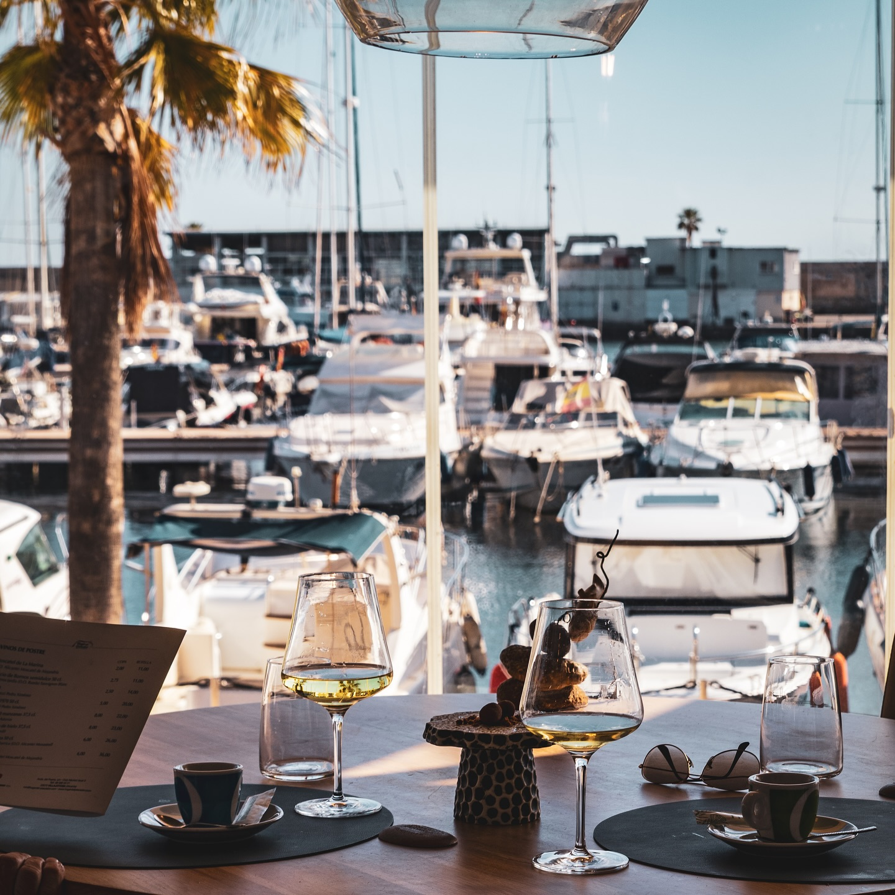
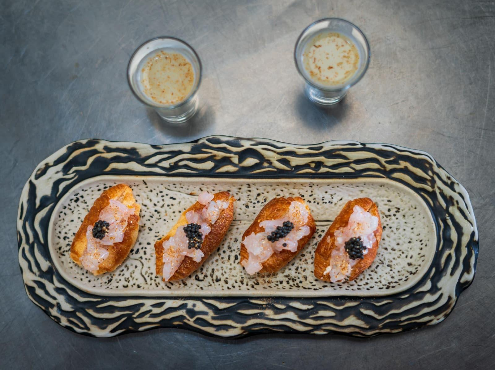
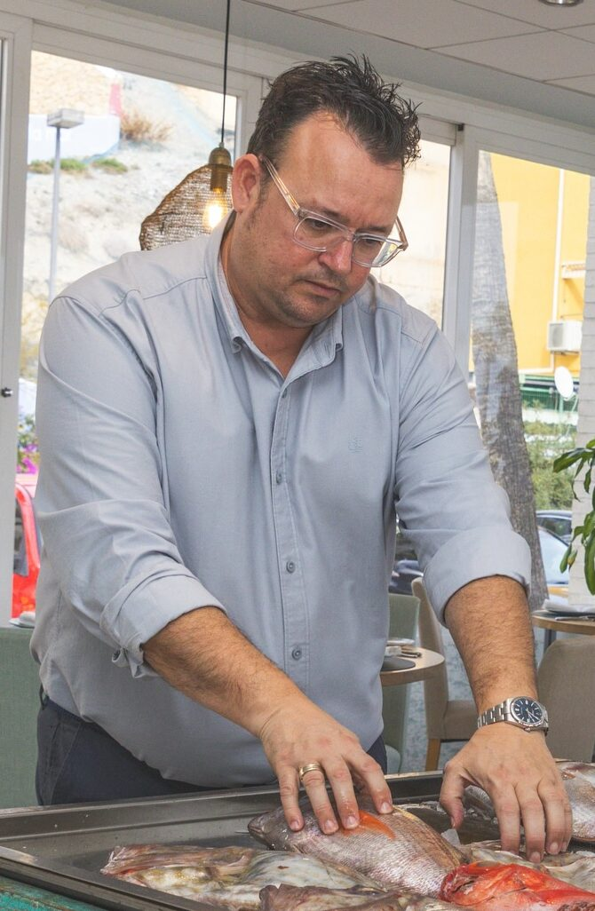

Arroz a banda de roca
€ 28Fumet de pescado de roca reducido veinticuatro horas. Arroz bomba, azafrán, allioli de almirez.
Cincuenta y cinco años frente al puerto. Arroces de leña y producto que entra por la puerta cada mañana, antes de que abra el servicio.

En 1970 la familia Devesa Santacreu abrió la puerta del restaurante frente al puerto de Villajoyosa. Tres generaciones después, el fuego, el caldo y los arroces siguen saliendo del mismo sitio: del rigor que cada plato exige.
Marta lidera la cocina con más de treinta años de experiencia. Julio ordena la sala y la bodega. Entre los dos, una idea simple: respeto absoluto por el producto que nos llega del Mediterráneo, técnica sin adornos, y fuego controlado.
"Aquí no hay secretos. Hay lonja, fuego y tiempo. Lo que cambia cada día es lo que entra por la puerta." — Marta Devesa, chef ejecutiva
Fumet de pescado de roca reducido veinticuatro horas. Arroz bomba, azafrán, allioli de almirez.
De lonja, del día. Cocida en agua de mar o a la plancha con sal en escamas. Sin más.
Bogavante vivo de la costa. Sofrito lento de tomate valenciano, pimiento rojo, ajo tierno.
Rape, mero y cigala en caldo de pescado espesado con patata y ñoras. Receta de 1970, sin retoques.
Cocido lento, brasa rápida, aceite de pimentón ahumado y patata violeta al romero.
Pan brioche de masa madre, tartar de gamba roja picada a cuchillo, caviar.
«La carta cambia cada mañana según lo que traiga la lonja. Si no hay, no lo ponemos. Así de simple.»
Ver carta completa →Sala con vistas al puerto deportivo, barra de producto, cocina visible. Cada rincón cuenta la misma historia: la del mar que entra cada mañana y se convierte en plato antes del servicio.

Mesa con vistas al puerto deportivo
Producto fresco, plato reposado
Vino de Alicante y arroz del día


Chef ejecutiva
Tercera generación al frente de la cocina. Especialista en arroces y guisos marineros. Más de treinta años aprendiendo del Mediterráneo y del fuego. Defensora del producto local y de la técnica sencilla.

Dirección de sala · Sumiller
Selecciona el pescado cada mañana en la lonja y dirige el servicio cada noche. Bodega con énfasis en vinos de Alicante y Valencia. Un orden discreto que hace que todo salga a tiempo.
Recomendamos reservar con antelación, sobre todo en temporada. Si viene con un grupo grande o celebra una ocasión especial, escríbanos directamente y preparamos la mesa.